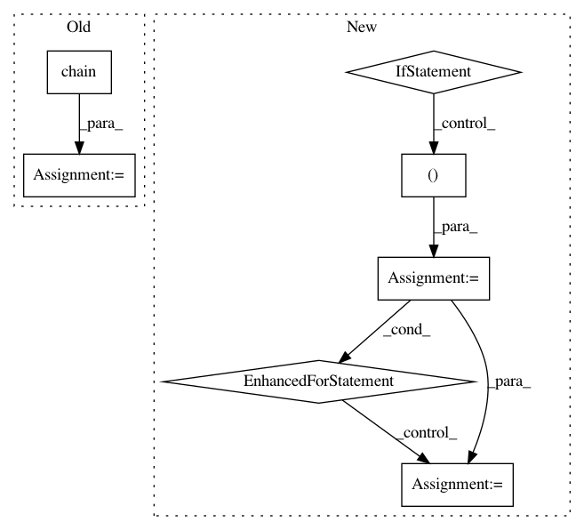

04808b85421bb7e68611bc4b5b4ae487bdf49dfd,reframe/core/environments.py,Environment,emit_load_commands,#Environment#,111
Before Change
// interface must be revisited (see issue /률)
ret = list(self._load_stmts)
else:
ret = list(
itertools.chain(*(rt.modules_system.emit_load_commands(m)
for m in self.modules))
)
for k, v in self._variables.items():
ret.append("export %s=%s" % (k, v))
After Change
"l": rt.modules_system.emit_load_commands,
"u": rt.modules_system.emit_unload_commands
}
module_ops = self._module_ops or [("l", m) for m in self._modules]
// Emit module commands
ret = []
for op, m in module_ops:
ret += emit_fn[op](m)
// Emit variable set commands
for k, v in self._variables.items():
ret.append("export %s=%s" % (k, v))
return ret
In pattern: SUPERPATTERN
Frequency: 3
Non-data size: 7
Instances
Project Name: eth-cscs/reframe
Commit Name: 04808b85421bb7e68611bc4b5b4ae487bdf49dfd
Time: 2018-12-17
Author: karakasis@cscs.ch
File Name: reframe/core/environments.py
Class Name: Environment
Method Name: emit_load_commands
Project Name: automl/auto-sklearn
Commit Name: 25da54cded1355fbe4a23fdc73b11c16a0ef1f88
Time: 2020-09-25
Author: feurerm@informatik.uni-freiburg.de
File Name: scripts/01_create_commands.py
Class Name:
Method Name:
Project Name: eth-cscs/reframe
Commit Name: 04808b85421bb7e68611bc4b5b4ae487bdf49dfd
Time: 2018-12-17
Author: karakasis@cscs.ch
File Name: reframe/core/environments.py
Class Name: Environment
Method Name: emit_unload_commands